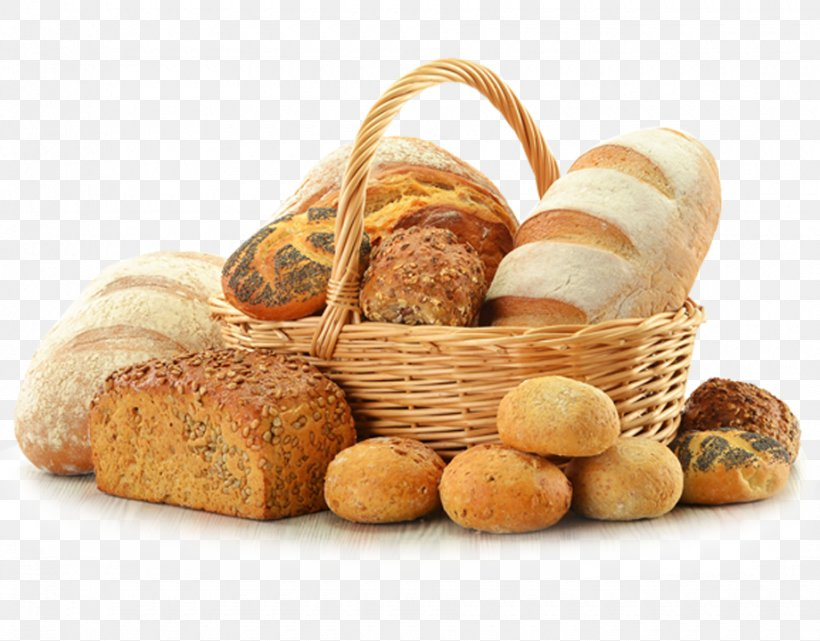

IMAGE 1
IMAGE 1IMAGE 2
IMAGE 3
IMAGE 4IMAGE 5IMAGE 6
IMAGE 7IMAGE 1IMAGE 4IMAGE 5IMAGE 7Baking is a method of preparing food that uses dry heat, typically in an oven, but can also be done in hot ashes, or on hot stones. The most common baked item is bread but many other types of foods can be baked. Heat is gradually transferred "from the surface of cakes, cookies, and pieces of bread to their center. baking, process of cooking by dry heat, especially in some kind of oven. It is probably the oldest cooking method. Bakery products, which include bread, rolls, cookies, pies, pastries, and muffins, are usually prepared from flour or meal derived from some form of grain. Bread, already a common staple in prehistoric times, provides many nutrients in the human diet.
Earliest processing of cereal grains probably involved parching or dry roasting of collected grain seeds. Flavour, texture, and digestibility were later improved by cooking whole or broken grains with water, forming gruel or porridge. It was a short step to the baking of a layer of viscous gruel on a hot stone, producing primitive flat bread. More sophisticated versions of flat bread include the Mexican tortilla, made of processed corn, and the chapati of India, usually made of wheat.
Baking techniques improved with the development of an enclosed baking utensil and then of ovens, making possible thicker baked cakes or loaves. The phenomenon of fermentation, with the resultant lightening of the loaf structure and development of appealing flavours, was probably first observed when doughs or gruels, held for several hours before baking, exhibited spoilage caused by yeasts. Some of the effects of the microbiologically induced changes were regarded as desirable, and a gradual acquisition of control over the process led to traditional methods for making leavened bread loaves. Early baked products were made of mixed seeds with a predominance of barley, but wheat flour, because of its superior response to fermentation, eventually became the preferred cereal among the various cultural groups sufficiently advanced in culinary techniques to make leavened bread.
A well-known quote, contained in a blockquote element. A well-known quote, contained in a blockquote element.